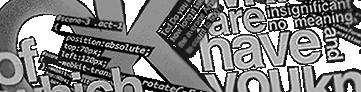
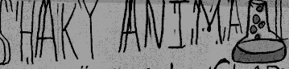
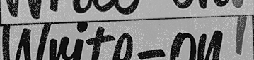
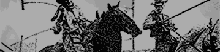
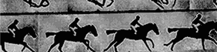

    <section>
        <ul>
            <li>
                <a href="http://lab.tylergaw.com/css-true-titles">
                    
                    <h3>CSS True Titles</h3>
                </a>
                <p>
                    The opening titles of the show True Detective are incredible.
                    I wanted to see if I could create a similar style title
                    sequence using CSS.
                </p>
            </li>
            <li>
                <a href="http://lab.tylergaw.com/papers/">
                    
                    <h3>Papersaver</h3>
                </a>
                <p>
                    I love drawing goofy things with Paper. I wanted a way to
                    put all my drawings on the Web. Papersaver allows me to
                    publish directly from the app.
                </p>
            </li>
            <li>
                <a href="http://lab.tylergaw.com/slenderman/">
                    
                    <h3>Slenderman</h3>
                </a>
                <p>
                    Branched out and tried something new on this one. I went and
                    read one typography book and think I need to make my own hand-drawn
                    typeface. This guy!
                </p>
            </li>
            <li>
                <a href="http://lab.tylergaw.com/themanfromhollywood">
                    
                    <h3>The Man From Hollywood</h3>
                </a>
                <p>
                    Would it be possible to create a kinetic type animation using
                    CSS? I thought so. TMFH is a first-of-its kind demo of
                    how far CSS animation can be taken.
                </p>
            </li>
            <li>
                <a href="http://jribbble.com">
                    
                    <h3>Jribbble</h3>
                </a>
                <p>
                    You know what your site needs? More jQuery! Jribbble is a jQuery
                    plugin for requesting shot and player information from the
                    Dribbble API.
                </p>
            </li>
            <li>
                <a href="http://lab.tylergaw.com/css-shaky-animation">
                    
                    <h3>CSS Shaky Animation</h3>
                </a>
                <p>
                    I've always loved the shaky animation style of a lot of cartoons.
                    This demo brings that style to the browser with some CSS
                    tricks and a little elbow grease.
                </p>
            </li>
            <li>
                <a href="http://lab.tylergaw.com/css-write-on">
                    
                    <h3>CSS Write-on Text Effect</h3>
                </a>
                <p>
                    Handwritten text being drawn onto the screen is a common
                    effect in motion graphics. In this demo I recreate that effect
                    using web technologies.
                </p>
            </li>
            <li>
                <a href="http://fullcourtshots.com">
                    
                    <h3>Full Court Shots</h3>
                </a>
                <p>
                    A free Saturday and a couple pots of coffee brought about
                    this site that offers an at-a-glance view of all the latest
                    and greatest design snaps from Dribbble.
                </p>
            </li>
            <li>
                <a href="http://lab.tylergaw.com/css-slideshows">
                    
                    <h3>CSS Animated Slideshows</h3>
                </a>
                <p>
                    Revolving image galleries made with only CSS animations? Get
                    out! Feast your eyes on some new wave CSS goodness.
                </p>
            </li>
            <li>
                <a href="http://lab.tylergaw.com/css-animated-sprites">
                    
                    <h3>CSS Animated Sprites</h3>
                </a>
                <p>
                    Wait, did I just recreate animated gifs using only CSS animations?
                    I sure as hell did. Might not be the most practical thing, but
                    it sure is cool!
                </p>
            </li>
        </ul>
    </section>
